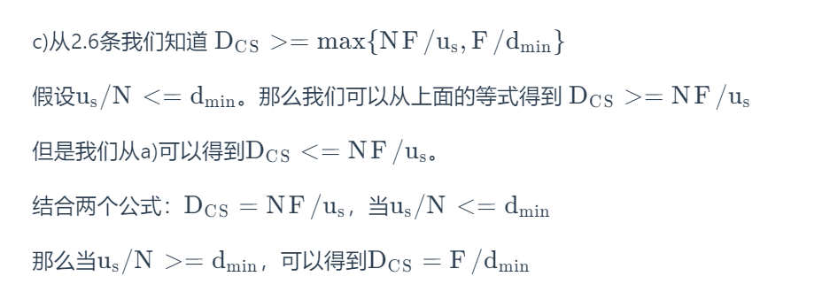
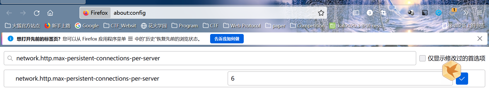

复习题
2.1节
R1： 列出5种非专用的因特网应用及它们所使用的应用层协议.
| 应用 | 协议 |
|---|---|
| Web网页 | HTTP |
| 迅雷下载 | P2P |
| 电子邮件 | SMTP |
| 网页访问 | DNS |
| 视频通信 | HTTP |
R2： 网络体系结构与应用程序体系结构之间有什么区别?
首先网络体系结构，一般指的是slack network layer。
应用程序体现结构，一般由开发者定义
区别：从应用程序研发者的角度看, 网络体系结构是固定的, 并为应用程序提供了特定的服务集合. 另一方面, 应用程序体系结构由应用程序研发者设计, 规定了如何在各种端系统上组织该应用程序.
应用程序体系架构可以通过应用网络体系架构中的内容从而使应用程序拥有网络传输功能.
R3：对两进程之间的通信会话而言, 哪个进程是客户, 哪个进程是服务器?
书本定义： 在一对进程之间的通信会话场景中, 发起通信(即在该会话开始时发起与其他进程的联系)的进程被标识为客户, 在会话开始时等待联系的进程是服务器.
发起通信的为client，接受通信的为server
R4：对一个P2P文件共享应用, 你同意”一个通信会话不存在客户端和服务器端的概念”的说法吗? 为什么?
我不同意. P2P文件共享应用虽然能够相互传输文件, 看起来每个用户即可以当客户, 也可以当服务器. 但是具体落实到一次通信会话中, 当对等方A请求对等方B发送一个特定的文件时, 在这个特定的通信会话中对等方A是客户, 而对等方B是服务器。
R5：运行在一台主机上的一个进程, 使用什么信息来标识运行在另一台主机上的进程?
IP地址与端口号
R6：假定你想尽快地处理从远程客户到服务器的事务, 你将使用UDP还是TCP? 为什么?
UDP，因为TCP是面向连接的，每一传输信息前，都需要进行三次握手建立连接，所以需要的时间比UDP长。
R7： 参见图2-4, 我们看到在该图中所列出的应用程序没有一个同时既要求无数据丢失又要求定时的. 你能设想一个既要求无数据丢失又高度时间敏感的应用程序吗?
火箭程序。
R8： 列出一个运输协议能够提供的4种宽泛类型的服务. 对于每种服务类型, 指出是UDP还是TCP(或这两种协议)提供这样的服务?
1）reliable data transfer TCP
2）吞吐量 都不
3）定时 都不
4）安全性 都不（SSL）
R9：前面讲过TCP能用SSL来强化, 以提供进程到进程的安全性服务, 包括加密. SSL运行在运输层还是应用层? 如果某应用程序研制者想要用SSL来强化UDP, 该研制者应当做些什么工作?

如果应用程序开发人员希望使用SSL增强TCP，则必须在应用程序中包含SSL代码。
SSL在TCP的握手阶段完成了双方的身份确认, 生成密钥等操作. 如果研制者要用SSL来强化UDP, 因为UDP是面向无连接的, 所以SSL首先要解决在UDP传输中的身份确认问题.
2.2 -2.4节
R10： 握手协议的作用是什么?
建立连接，以保障数据的可靠传输。
R11：为什么HTTP, SMTP及POP3都运行在TCP上, 而不是在UDP上?
对于这些协议来说，reliable data transfer是十分重要的，而速度要求并不高。所以选择TCP。
首先要知道TCP几个重要的特性: 面向连接, 保证数据完整性, 保证数据有序到达, 有拥塞控制功能. 而上述功能UDP都没有.
再来看HTTP, 用户通过浏览器以HTTP协议向服务器发起请求, 如果这个请求数据不完整, 服务器将无法给出正确响应, 用户也得不到想要的结果.
SMTP和POP3两个邮件协议也需要保证数据的完整性, 并且要保证按照一定的顺序交付, 所以选择TCP。
R12： 考虑一个电子商务网站需要保留每一个客户的购买记录. 描述如何使用cookie来完成该功能?
当第一次购买时，client发送的http包没有cookie，server收到后得到http报文，发现没cookie于是在数据库中创建一个数据。然后将回复一个让client创建特定cookie的报文。于是client创建这个cookie于浏览器中，然后每次发送http包后都会附加这个cookie，server会将这个client的购买记录储存在相应的数据库位置中。
当用户第一次访问站点时，服务器将创建一个唯一的标识号，在其后端数据库中创建一个条目，并将此标识号作为cookie编号返回。此cookie编号存储在用户的主机上，并由浏览器管理。在每次后续访问（和购买）期间，浏览器将cookie编号发送回站点。因此，站点知道这个用户（更准确地说，是这个浏览器）访问该站点的时间。
R13：述Web缓存器是如何减少接收被请求对象的延时的. Web缓存器将减少一个用户请求的所有对象或只是其中的某些对象的时延吗? 为什么?
当我们正常请求一个对象的时候，我们需要向server请求然后server再返回对象。但是，这需要相对较长的时间，因为这需要我们先路由到服务器，服务器再检索有无对象，然后再通过路径发送回来。而Web chache一般会在每一个接入网都会存在，并且内网的宽带较高，我们省下来路由的时间，传输时延也更小没因而较少了实验，
Web缓存器设置在用户和初始服务器之间, 当用户要向初始服务器发起请求时, 浏览器会先将请求定位到Web缓存器上, 如果缓存器上有请求对象的副本则直接将该副本响应给客户. 如果缓存器中没有, 则从Web缓存器向初始服务器发起对该对象的请求, Web缓存器收到来自初始服务器的响应对象后, 自己会保留一份该对象的副本, 然后再响应给用户.
不是，它只是缓存过我们请求过的信息。
R14：Telnet到一台Web服务器并发送一个多行的请求报文. 在该请求报文中包含If-modified-since: 首部行, 迫使响应报文中出现”304 Not Modified”状态代码.
太麻烦了，这里直接说一下咋操作把。发送一个http报文，将If-modified-since:设置一个当前时间即可，因为他不会在这个时间进行更新。
使用Web缓存器带来的最直观问题是, 如果服务器上的对象在被缓存到缓存器后修改了, 该怎么办?
这涉及到HTTP协议的一种机制: 条件GET(conditional GET).
客户向Web服务器发起请求, 请求首先会被缓存器拦截, 这时如果缓存中用户请求的内容, 未了保证请求的内容在服务器上也是最新的, 缓存器会向服务器发送一个GET请求, GET请求中包含首部行If-modified-since, 该首部行的内容是该对象在缓存器中的最新副本.
如果服务器中被请求对象和缓存器中的最新副本一样, 就没必要再发送一次了, 这时就会响应一个”304 Not Modified”状态码, 不带任何多余数据. 如果服务器中的对象更新过, 和缓存器中的副本不一样了, 服务器会将最新的副本发送给缓存器.
R15： 列出几种流行的即时通信应用.它们使用相同的协议作为SMS吗?
电子邮件, FaceBook, 微信等.
以上三个的应用层协议各不相同.
R16： 假定Alice使用一个基于Web的电子邮件账户(例如Hotmail或Gmail)向Bob发报文, 而Bob使用POP3从他的邮件服务器访问自己的邮件. 讨论该报文是如何从Alice主机到Bob主机的. 要列出在两台主机间移动该报文时所使用的各种应用层协议.
首先Alice 的代理（即浏览器）通过HTTP将邮件发送到他的mail server，然后Alice mail server 使用 SMTP发送到Bob的mail server，Bob再通过POP3从mail server中获得其邮件
R17：将你最近收到的报文首部打印出来. 其中有多少Received: 首部行? 分析该报文的首部行中的每一行.
R18：从用户的观点看, POP3协议中下载并删除模式和下载并保存模式有什么区别吗?
从用户的角度看是没有的, 因为无论采取哪种模式, 用户都得到了邮件报文. 但是对于邮件服务器就不同了, 如果是下载删除, POP3会话结束后就会把标记的邮件报文删除, 再次连接上邮件服务器这些邮件报文就不存在了.
R19： 一个机构的Web服务器和邮件服务器可以有完全相同的主机名别名吗? 包含邮件服务器主机名的RR有什么样的类型?
可以, 因为在DNS数据库中, 记录一条RR(Resource Record)需要提供4个字段: Name, Value, Type, TTL.
其中Type字段记录本条记录的类型. 这就让机构的Web服务器和邮件服务器用相同主机别名成为可能. 假如我们要访问该机构的邮件服务器, 除了要给出主机别名, 在DNS报文中还会指定RR的类型为MX(邮件服务器的规范主机名)。
R20：仔细检查收到的电子邮件, 查找由使用.edu电子邮件地址的用户发送的报文首部. 从其首部, 能够确定发送该报文的主机的IP地址吗? 对于由Gmail账号发送的报文做相同的事.
您应该能够使用.edu电子邮件地址查看发送方的IP地址。但是，如果用户使用Gmail帐户，您将无法看到发件人的IP地址。
2.5 - 2.7节
R21：在BitTorrent中, 假定Alice向Bob提供一个30秒间隔的文件块吞吐量. Bob将必须进行回报, 在相同的间隔中向Alice提供文件块吗? 为什么?
不一定，如果Alice的速率达不到向Bob上载者的前四，那么将不会发送。
不, Bob并不必须进行回报. 因为Alice会选取一定数量的”邻居”, 并从它们那里获得块. 而这个选择不是基于Alice向谁发送了块就要向谁索要块, 而是在Alice的对等方列表中向对等方发起请求, 选取响应速度快的前4位上载者来获取块. Alice获取块的伴侣也是不停更新的.
R22：考虑一个新对等方Alice加入BitTorrent而不拥有任何文件块. 没有任何文件快, 因此她没有任何东西可上载, 她无法成为任何其他对等方的前4位上载者. 那么Alice是怎样得到她的第一个文件块呢?
BitTorrent机制中，
我们需要知道Alice会在加入torrent后，tracker会给Alice一个集合列表，Alice根据列表中ip与其他对等方建立TCP连接，并向他们请求文件块。
每个对等方都会同时向5个邻居发送文件块，其中四个为发送文件块速率前四的上载者，另一个为随机选取的邻居。所以，Alice可能会被一个拥有文件块的对等体发送文件块，从而开始正常的发送接收过程。
Alice虽然不能成为上载者, 但是她能成为接收者呀, 接收到块后自然就有可能成为上载者了.
Alice在空手加入洪流时, 追踪器会随机地从参与对等方集合中选择一个对等方子集, 并将子集中对等方的IP地址发送给Alice. Alice持有这张列表并尝试与列表中所有的对等方建立并行的TCP连接, 并选择前4位上载者, 向它们请求块(最稀缺优先原则).
R23：覆盖网络是什么? 它包括路由器吗? 在覆盖网络中边是什么?
覆盖网络是一种面向应用层的网络, 包括对等方和对等方之间由虚拟联络构成的抽象逻辑网.
覆盖网络不包括路由器.
覆盖网络中的边就是对等方之间的逻辑链路。
R24：CDN通常采用两种不同的服务器放置方法之一. 列举并简单描述它们。
深入: 通过在遍及全球的接入ISP中部署服务器集群来深入到ISP的接入网中. 好处是靠近端用户, 减少端用户和CDN集群之间链路和路由器数量, 改善了用户感受到的时延和吞吐量. 缺点是由于高度分布式设计, 维护和管理集群成本高.
邀请做客: 通过在少量关键位置建造大集群来邀请到ISP做客. 这些CDN集群通常放在因特网交换结点(IXP). 好处是产生较低的维护和管理开销. 缺点是以对端用户的较高时延和较低吞吐量为代价.
R25： 除了如时延, 丢包和带宽性能等网络相关的考虑外, 设计一种CDN服务器选择策略时还有其他重要因素. 它们是什么?
除了与网络相关的因素之外，还有一些重要的因素需要考虑，例如负载平衡（客户端不应指向过载集群）、日效应、网络中DNS服务器之间的变化、很少访问视频的可用性有限以及需要缓解流行视频内容可能产生的热点。
另一个需要考虑的因素是ISP交付成本-可以选择集群，以便使用特定的ISP来承载CDN到客户端的通信，同时考虑到ISP和集群运营商之间的契约关系中的不同成本结构。
R26：2.7节中所描述的UDP服务器仅需要一个套接字, 而TCP服务器需要两个套接字. 为什么? 如果TCP服务器支持n个并行连接, 每条连接来自不同的客户主机, 那么TCP服务器需要多少个套接字.
因为UDP是面向无连接的, 它只需要有一个套接字用于接收和发送, 并且可以接收来自不同地址主机的UDP包. 而TCP是面向连接的, 除了接收访问的套接字, 每和一个客户连接就要创建一个专用的套接字.
n+1个.
R27：对于2.7节所描述的运行在TCP之上的客户-服务器应用程序, 服务器程序为什么必须先于客户程序运行? 对于运行在UDP之上的客户-服务器应用程序, 客户程序为什么可以先于服务器程序运行.
需要实时接收client请求。
建立TCP连接需要经过一个3次握手的过程, 如果服务器没有启动根本无法握手, 从而无法创建连接.
UDP是面向无连接的, 就算服务器没有启动, 客户程序照样可以把UDP发出去, 但服务器可能就收不到了.
习题
判断题
F、T、F、F、F
p2: 短消息服务(SMS)是一种允许移动电话之间通过蜂窝网络发送和接收短信的技术。一个SMS消息可以包含140个字节的数据，它支持国际语言。消息的最大大小可以是160个7位字符、140个8位字符或70个16位字符。SMS通过SS#7协议的移动应用部分(MAP)实现，短消息协议由3 GPP TS 23.040和3 GPP TS 23.041定义。此外，MMS（多媒体消息传递服务）扩展了原始文本消息的功能，并支持发送照片、更长的文本消息和其他内容。
iMessage是苹果公司开发的即时通讯服务。iMessage支持通过蜂窝数据网络或WiFi发送到IOS设备和Mac的文本、照片、音频或视频。苹果的iMessage基于专有的二进制协议APN(Apple Push Notification Service)。
WhatsApp Messenger是一种即时通讯服务，支持iOS、Android、手机和黑莓等多种移动平台。WhatsApp用户可以通过蜂窝数据网络或WiFi相互发送无限的图像、文本、音频或视频。WhatsApp使用XMPP协议（可扩展消息传递和存在协议）。
iMessage和WhatsApp与SMS不同，因为它们使用数据计划发送消息，并且在TCP/IP网络上工作，而SMS使用我们从无线运营商购买的短信计划。此外，iMessage和WhatsApp支持发送照片、视频、文件等，而原始短信只能发送短信。最后，iMessage和WhatsApp可以通过WiFi工作，但SMS不能。
p3：DNS、HTTP；传输层：UDP于DNS，TCP于HTTP；
p4：
a)文档请求是http://gaia.cs.umass.edu/cs453/index.html。host：字段表示服务器的名称，/cs453/index.html表示文件名。
b)浏览器正在运行HTTP1.1版本，就像第一对之前所指出的那样。
c)浏览器正在请求持久连接，如连接所示：保持-活动。
d)这是刁钻的问题。此信息不包含在任何地方的HTTP消息中。因此，仅看HTTP消息的交换就无法区分这一点。您需要从IP数据报(承载承载HTTPGET请求的TCP段)中获得信息来回答这个问题。
e)Mozilla/5.0。服务器需要浏览器类型信息将同一对象的不同版本发送到不同类型的浏览器。比如前端的兼容问题。
p5：
a）状态代码200和短语ok表示服务器能够找到文档成功。答复于2008年3月7日星期二提供格林威治标准时间12:39:45。
b）上一次修改index.html文档是在2005年12月10日星期六18:27:46 格林尼治时间。
c）返回的文档中有3874个字节。
d）返回文件的前五个字节是：<!doc。服务器同意持久连接，如connection:Keep Alive字段所示。
p6；
a）在RFC 2616的第8节中讨论了持久连接（这一点的真正目的问题是让你检索并阅读一份RFC）。RFC第8.1.2和8.1.2.1节表示客户机或服务器可以向另一个表明它是将关闭永久连接。它通过包含连接令牌来实现“关闭”在http请求/回复的连接头字段中。
b）http不提供任何加密服务。
c)（来自RFC 2616）“使用持久连接的客户端应该限制同时维护到给定服务器的连接。单用户客户端与任何服务器或代理服务器的连接不应超过2个。”
d)是。（来自RFC 2616）在服务器决定关闭“空闲”连接的同时，客户端可能已经开始发送新请求。从服务器的角度来看，连接是在空闲时关闭的，但从客户端的角度来看，请求正在进行中。
p7：获得IP地址的时间RTT1 + RTT2 +….+RTTn
通信的时间为2RTT0
p8：a）16RTT0 + RTT1 + RTT2 +….+RTTn + 2 * RTT 因为本身HTTP页面也算一个对象
b）RTT1 + RTT2 +….+RTTn + 2 * RTT0 + 4 * RTT = 6 * RTT0 RTT1 + RTT2 +….+RTTn
c）10* RTT0 + RTT1 + RTT2 +….+RTTn
p9：
a） Δ=(850000)/15Mbps=0.0567sec
β=16 Δβ又名流量强度
因而平均接入时延为 Δ/(1-Δβ)=0.0567/(1-0.0567*16)=0.6
平均响应时延就为0.907+3=3.6 sec
b）缓存器可以使我们不必接入网络，也就说流量强度减少了
所以我们的流量强度都变为16 * 0.6 * 0.0567=0.0544
平均接入时延为0.124
平均响应时延为3.124。我们需要的资源有百分之40都可以从缓存区满足，所以我们请求资源数目为原来的百分之60。即3.124*0.6=1.874sec
p10:
并不并行没有区别
(200/150+Tp+200/150+Tp+200/150+Tp+100000/150+Tp)
(200/(150/10)+Tp+200/(150/10)+Tp+200/(150/10)+Tp+100000/(150/10)+Tp)=73777+8∗Tp(秒)
持续连接就是省去了TCP连接过程，其实还是没有区别，因为时间太短了。
P11：
a)是的，因为Bob有更多的连接，他可以获得更大的链路带宽份额。
b)是的，Bob仍然需要执行并行下载；否则，他将获得比其他四个用户更少的带宽。
P12：
P13：
SMTP中的MAIL FROM:的邮件是从SMTP客户端发送的标识发件人的邮件将邮件消息发送到SMTP服务器。
From：在邮件消息本身不是SMTP邮件，而不是邮件正文中的一行。
P14：
SMTP使用仅包含一行来标记邮件正文的结束。http使用length来表示消息正文的长度。
不，HTTP不能使用SMTP使用的方法，因为HTTP消息可以是二进制数据，而在SMTP中，消息主体必须是7位的ASCII格式。
p15：
MTA代表邮件传输代理。主机将消息发送给MTA。然后，该消息遵循一系列MTA以到达接收者的邮件阅读器。我们看到这个垃圾邮件遵循一个MTA链。诚实的MTA应该报告它收到消息的位置。请注意，在此消息中，“asusus-4b96([58.88.21.177])不报告它收到电子邮件的位置。由于我们假定只有发端人是不诚实的，所以“asusus-4b96([58.88.21.177])必须是发起人。
P16：
uidl缩写“唯一ID列表”。当POP3客户端发出uidl命令时,服务器用唯一的消息ID来响应于在该服务器中存在的所有消息的用户的邮箱。此命令对“下载并保持”是有用的。通过维护文件该列表列出了在较早的会话期间检索到的消息，客户端可以使用Urel用于确定服务器上的哪些消息已被看到的命令。
P17：
3）
C: list
S: 1 498
S: 2 912
S:
C: retr 1
S: blah …..
S: ….blah
S:
C: retr 2
S: blah blah …
S: ………..blah
S:
C: quit
S: +OK POP3 server signing offP18:
a）对于给定的域名输入(如ccn.com)、IP地址或网络管理员名称，whois数据库可用于定位相应的注册服务器、whois服务器、DNS服务器等。
b）https://whois.domaintools.com/
c）
─# nslookup baidu.com
Server: 192.168.235.2
Address: 192.168.235.2#53
Non-authoritative answer:
Name: baidu.com
Address: 220.181.38.148
Name: baidu.com
Address: 220.181.38.251
C:\Users\Violet>nslookup -qt=A www.baidu.com
服务器: UnKnown
Address: 192.168.60.192
非权威应答:
名称: www.a.shifen.com
Addresses: 110.242.68.3
110.242.68.4
Aliases: www.baidu.com
C:\Users\Violet>nslookup -qt=NS www.baidu.com
服务器: UnKnown
Address: 192.168.60.192
非权威应答:
www.baidu.com canonical name = www.a.shifen.com
a.shifen.com
primary name server = ns1.a.shifen.com
responsible mail addr = baidu_dns_master.baidu.com
serial = 2111130003
refresh = 5 (5 secs)
retry = 5 (5 secs)
expire = 2592000 (30 days)
default TTL = 3600 (1 hour)
e)攻击者可以使用whois数据库和nslookup工具来确定目标机构的IP地址范围、DNS服务器地址等。
g)通过分析攻击数据包的源地址，受害者可以使用whois获取攻击所来自的域的信息，并可能通知源域的管理员。
P19:
a)
The following delegation chain is used for gaia.cs.umass.edu
a.root-servers.net
E.GTLD-SERVERS.NET
ns1.umass.edu(authoritative)
First command:
dig +norecurse @a.root-servers.net any gaia.cs.umass.edu
;; AUTHORITY SECTION:
edu. 172800 IN NS E.GTLD-SERVERS.NET.
edu. 172800 IN NS A.GTLD-SERVERS.NET.
edu. 172800 IN NS G3.NSTLD.COM.
edu. 172800 IN NS D.GTLD-SERVERS.NET.
edu. 172800 IN NS H3.NSTLD.COM.
edu. 172800 IN NS L3.NSTLD.COM.
edu. 172800 IN NS M3.NSTLD.COM.
edu. 172800 IN NS C.GTLD-SERVERS.NET.
Among all returned edu DNS servers, we send a query to the first one.
dig +norecurse @E.GTLD-SERVERS.NET any gaia.cs.umass.edu
umass.edu. 172800 IN NS ns1.umass.edu.
umass.edu. 172800 IN NS ns2.umass.edu.
umass.edu. 172800 IN NS ns3.umass.edu.
Among all three returned authoritative DNS servers, we send a query to the first one.
dig +norecurse @ns1.umass.edu any gaia.cs.umass.edu
gaia.cs.umass.edu. 21600 IN A 128.119.245.12
b)
──(root💀kali)-[/home/kali]
└─# dig +norecurse @a.root-servers.net any ujn.edu.cn
; <<>> DiG 9.16.15-Debian <<>> +norecurse @a.root-servers.net any ujn.edu.cn
; (2 servers found)
;; global options: +cmd
;; Got answer:
;; ->>HEADER<<- opcode: QUERY, status: NOERROR, id: 41305
;; flags: qr; QUERY: 1, ANSWER: 0, AUTHORITY: 8, ADDITIONAL: 11
;; OPT PSEUDOSECTION:
; EDNS: version: 0, flags:; udp: 1472
;; QUESTION SECTION:
;ujn.edu.cn. IN ANY
;; AUTHORITY SECTION:
cn. 172800 IN NS a.dns.cn.
cn. 172800 IN NS b.dns.cn.
cn. 172800 IN NS c.dns.cn.
cn. 172800 IN NS d.dns.cn.
cn. 172800 IN NS e.dns.cn.
cn. 172800 IN NS f.dns.cn.
cn. 172800 IN NS g.dns.cn.
cn. 172800 IN NS ns.cernet.net.
;; ADDITIONAL SECTION:
a.dns.cn. 172800 IN A 203.119.25.1
b.dns.cn. 172800 IN A 203.119.26.1
c.dns.cn. 172800 IN A 203.119.27.1
d.dns.cn. 172800 IN A 203.119.28.1
e.dns.cn. 172800 IN A 203.119.29.1
f.dns.cn. 172800 IN A 195.219.8.90
g.dns.cn. 172800 IN A 66.198.183.65
ns.cernet.net. 172800 IN A 202.112.0.44
a.dns.cn. 172800 IN AAAA 2001:dc7::1
d.dns.cn. 172800 IN AAAA 2001:dc7:1000::1
;; Query time: 119 msec
;; SERVER: 198.41.0.4#53(198.41.0.4)
;; WHEN: Sun Nov 14 00:54:02 EST 2021
;; MSG SIZE rcvd: 366
┌──(root💀kali)-[/home/kali]
└─# dig +norecurse @b.dns.cn any ujn.edu.cn
; <<>> DiG 9.16.15-Debian <<>> +norecurse @b.dns.cn any ujn.edu.cn
; (1 server found)
;; global options: +cmd
;; Got answer:
;; ->>HEADER<<- opcode: QUERY, status: NOERROR, id: 9241
;; flags: qr; QUERY: 1, ANSWER: 0, AUTHORITY: 5, ADDITIONAL: 5
;; OPT PSEUDOSECTION:
; EDNS: version: 0, flags:; udp: 4096
;; QUESTION SECTION:
;ujn.edu.cn. IN ANY
;; AUTHORITY SECTION:
edu.cn. 172800 IN NS ns2.cuhk.hk.
edu.cn. 172800 IN NS dns.edu.cn.
edu.cn. 172800 IN NS dns2.edu.cn.
edu.cn. 172800 IN NS ns2.cernet.net.
edu.cn. 172800 IN NS deneb.dfn.de.
;; ADDITIONAL SECTION:
dns.edu.cn. 172800 IN A 202.38.109.35
dns2.edu.cn. 172800 IN A 202.112.0.13
dns.edu.cn. 172800 IN AAAA 2001:250:c006::35
dns2.edu.cn. 172800 IN AAAA 2001:da8:1:100::13
;; Query time: 32 msec
;; SERVER: 203.119.26.1#53(203.119.26.1)
;; WHEN: Sun Nov 14 00:55:27 EST 2021
;; MSG SIZE rcvd: 243
┌──(root💀kali)-[/home/kali]
└─# dig +norecurse @dns.edu.cn any ujn.edu.cn
; <<>> DiG 9.16.15-Debian <<>> +norecurse @dns.edu.cn any ujn.edu.cn
; (2 servers found)
;; global options: +cmd
;; Got answer:
;; ->>HEADER<<- opcode: QUERY, status: NOERROR, id: 49004
;; flags: qr; QUERY: 1, ANSWER: 0, AUTHORITY: 2, ADDITIONAL: 5
;; OPT PSEUDOSECTION:
; EDNS: version: 0, flags:; udp: 4096
; COOKIE: fc5841cd63b37108a8604fc36190a4e019ea1551105007ca (good)
;; QUESTION SECTION:
;ujn.edu.cn. IN ANY
;; AUTHORITY SECTION:
ujn.edu.cn. 172800 IN NS dns.ujn.edu.cn.
ujn.edu.cn. 172800 IN NS mailbox.ujn.edu.cn.
;; ADDITIONAL SECTION:
mailbox.ujn.edu.cn. 172800 IN A 202.194.64.1
dns.ujn.edu.cn. 172800 IN A 202.194.68.10
mailbox.ujn.edu.cn. 172800 IN AAAA 2001:da8:7005:302::1
dns.ujn.edu.cn. 172800 IN AAAA 2001:da8:7005:320::10
;; Query time: 59 msec
;; SERVER: 202.38.109.35#53(202.38.109.35)
;; WHEN: Sun Nov 14 00:55:45 EST 2021
;; MSG SIZE rcvd: 195
P20：
我们可以定期拍摄本地DNS服务器中DNS缓存的快照。该组织在DNS缓存中出现最频繁的Web服务器是最流行的服务器。这是因为如果更多的用户对Web服务器感兴趣，那么DNS请求就会对此感兴趣服务器更频繁地由用户发送。因此，该Web服务器将出现在DNS中缓存更频繁。
P21：
是的，我们可以在本地DNS服务器中使用DIG查询该网站。例如，dig cnn.com将返回查找CNN.com的查询时间。如果CNN.com几秒钟前刚刚被访问，那么CNN.com的条目将缓存在本地DNS缓存中，因此查询时间为0毫秒。否则，查询时间很长。
我实际操作发现，还是会有时延，但是比第一次时间短很多。
P22:
计算client-server architecture时，我们需要的最小分发时间为 max{NF/ $u_s$ , F/ $u_{min}$ }
计算P2P时，我们需要的最小分发时间为 max{F/ $u_s$ , F/ $u_{min}$ , NF/ ( $u_s$ + $u_1$ + …. + $u_n$ ) }
图的话，之后有时间用python画一下。
P23：
a）同时向多个对等体发送同一数据
b）向每个对等体以 $d_min$ 的速率向每一个对等体发送数据
c）简单地说，当服务器的速度较快时，比n*dmax都快时，它仍然会受限于dmin的因素。
当服务器慢时，它本身就会受限于自身的上传速度。

p24:
a）
p25: N*(N-1)/2
P26：
a）可能，但可能需要很长的时间，因为我们需要知道，如果你想搭便车的话，那只能等待一个其他对等体随机发送文件块给你的机会。这是很困难的。
b）将所有的计算机连入网络，并请求不同的文件块，之后等待其他对等体上载给他文件块。一旦有一台计算机被上载快后，便将次文件块转发给他的其他计算机中。
P27：如果没有将质量与速度进行匹配，那么有 $n^2$ 个，如果匹配n个
b）2n个
P28：
a)无法进行TCP连接
b）问题不大，只不过无法发送数据
c）无法成功进行信息交互。
p29：
不需要。
p30：

好处下载速度增快，坏处占用了更多的带宽。
p31：
对于远程登录（telnet和ssh）之类的应用程序，面向字节流的协议是非常自然的，因为应用程序中没有消息边界的概念。当用户键入一个字符时，我们只需将该字符放到TCP连接中即可。在其他应用程序中，我们可能会发送一系列在它们之间具有固有边界的消息。例如，当一个SMTP邮件服务器向另一个SMTP邮件服务器连续发送多个电子邮件时。由于TCP没有指示边界的机制，所以应用程序必须自己添加指示，以便应用程序的接收方能够区分一条消息和另一条消息。如果将每条消息放入一个不同的udp段中，则接收端将能够在没有任何指示的情况下，区分各种讯息、申请。
p32：
、要创建Web服务器，我们需要在主机上运行Web服务器软件。许多供应商出售Web服务器软件。然而，当今最流行的Web服务器软件是Apache，它是开放的源并且是自由的。多年来，它一直受到开源社区的高度优化。